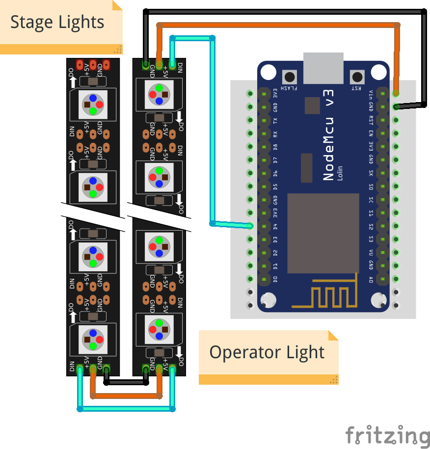
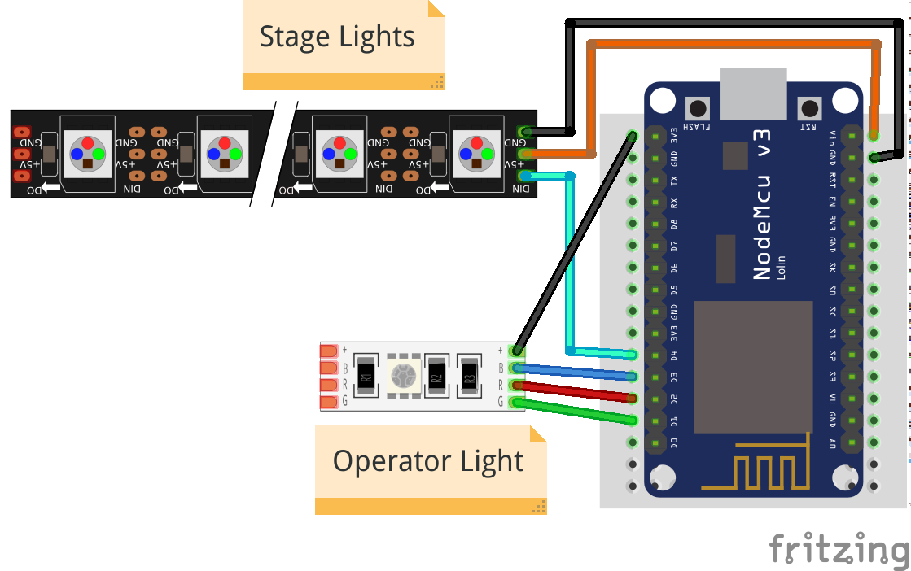

Tally¶
tally-settings.ini Reference¶
| setting name | default | description |
|---|---|---|
station.ssid |
(required) | The name of the WiFi that the Tally should connect to |
station.password |
(none) | The password to connect to the WiFi. If the WiFi has no password, leave it empty. |
hub.ip |
(required) | The IP address the hub is running on |
hub.port |
7411 |
The port where the hub listens. |
tally.name |
(chip id) | How you want this tally to be labeled in the hub. This name needs to be unique amongst all tallies in your network. It must not be longer than 26 characters. Use of ASCII characters is recommended. |
operator.type |
grb+ |
How the pins for the operator light are driven. Use grb+ when a high state signalizes off and grb- when a low state signalizes off. |
operator.ws2812 |
5 grb |
Number of WS2812 like LEDs in a strip that serve as operator lights. Has to be a number between 0 and 10, followed by the order of the colors (grb or rgb). The operator lights are the first in the strip, followed by the stage lights. |
stage.type |
grb+ |
How the pins for the stage light are driven. Use grb+ when a high state signalizes off and grb- when a low state signalizes off. |
stage.ws2812 |
0 grb |
Number of WS2812 like LEDs in a strip that serve as stage lights. Has to be a number between 0 and 10, followed by the order of the colors (grb or rgb). The stage lights come right after the operator lights in the strip. |
Using WS2812, NeoPixel, etc¶
WS2812-compatible LED strips come with many names. Most common are WS2812b and NeoPixel. If you have
anything that says it is compatible with either of those, it will probably work.
Connect the strip to pin D4, the +5V and GND respectively.

By default the first 5 pixels in the strip will work as Operator Lights, the others stay dark.
The number of LEDs you want to use as Operator Lights and Stage Lights can be configured in
tally-settings.ini with the operator.ws2812 and stage.ws2812 settings.
In the example above, the correct configuration to drive 4 Operator Lights and 4 Stage Lights would be
operator.ws2812 = 4
stage.ws2812 = 4
Order of LED lights
When wiring, please note, that the Operator Lights always come before the Stage Lights.
It is also possible to combine WS2812 strips and RGB Leds in one setup as all pins are driven simultaneously. You could, for instance use a single RGB LED as the operator light and a WS2812 strip for the stage light.

The configuration for this example would be
operator.ws2812 = 0
stage.ws2812 = 4
Using LEDs with common cathode¶
You can use an LED with a common cathode with the tally. First connect the common pin
to GND instead of 3V3 and then configure tally-settings.ini to drive the pins correctly.
If you skip this step the colors that should be on are off, and vice versa.
operator.type = grb-
stage.type = grb-
You can also mix different RGB Led types for the Operator and Stage Light.